Tarikh simpan: 6 Oktober 2026. Untuk kegunaan peribadi sahaja.
Tempoh video: kira-kira 1 minit 39 saat.
Maklumat disusun daripada kapsyen penuh, bingkai video dan transkripsi automatik audio. Transkripsi automatik boleh tersalah mengeja; perkataan yang jelas sepadan dengan bahan dan paparan video diseragamkan kepada ejaan Bahasa Malaysia.
Kuantiti berangka di bawah diambil daripada kapsyen, bukan dianggarkan daripada gambar. Bahan tambahan yang disebut dalam audio atau kelihatan dalam hidangan diasingkan dan ditandakan [TIDAK DINYATAKAN] apabila kuantitinya tidak diberikan.
Bilangan hidangan: [TIDAK DINYATAKAN].
Masa penyediaan: [TIDAK DINYATAKAN].
Masa memasak keseluruhan: [TIDAK DINYATAKAN]. Audio menyebut memasak stok selama 1 jam; ini bukan jumlah masa keseluruhan resipi.
Bahan dan kuantiti
A. Sambal — kuantiti dalam kapsyen
Bawang putih — 20 g.
Udang kering — 30 g.
Cili boh — 300 g; ditulis sebagai “Chili Boh” dalam kapsyen.
Garam — 1/2 sudu teh; kapsyen: 1/2Tsp.
Gula — 2 sudu teh; kapsyen: 2Tsp.
B. Sambal — bahan tambahan dalam penerangan audio
Bawang merah — [TIDAK DINYATAKAN].
Minyak untuk mengisar bahan sambal — [TIDAK DINYATAKAN].
Minyak untuk menumis sambal — [TIDAK DINYATAKAN]; audio menyebut “sedikit minyak”, tanpa ukuran.
Belacan — [TIDAK DINYATAKAN].
C. Stok / sup udang
Bahan ini diterangkan dalam audio, tetapi kuantitinya tidak diberikan dalam kapsyen.
Kulit udang — [TIDAK DINYATAKAN]. Jangan andaikan kuantitinya bersamaan dengan 100 g isi udang yang disenaraikan untuk hidangan.
Minyak untuk menumis kulit udang — [TIDAK DINYATAKAN].
Air — [TIDAK DINYATAKAN].
Tulang ayam — [TIDAK DINYATAKAN].
Kaki ayam — [TIDAK DINYATAKAN].
Sengkuang — [TIDAK DINYATAKAN].
Sambal yang telah dimasak — separuh daripada sambal yang disediakan, mengikut penerangan audio; berat atau isipadu: [TIDAK DINYATAKAN].
Garam tambahan untuk sup — [TIDAK DINYATAKAN].
Gula tambahan untuk sup — [TIDAK DINYATAKAN].
Nota penting: Kuantiti garam 1/2 sudu teh dan gula 2 sudu teh dalam kapsyen diletakkan di bawah bahagian sambal. Jangan gunakan angka itu sebagai ukuran tambahan untuk sup tanpa pengesahan sumber.
D. Mee, bihun dan pelengkap
Kuantiti daripada bahagian “Bahan-Bahan Lain” dalam kapsyen:
Bihun — 200 g; kapsyen: “Bee Hoon”.
Mee — 200 g.
Tauge — 80 g; kapsyen: “Taugeh”.
Kangkung — 30 g.
Udang — 100 g.
Bawang goreng — [TIDAK DINYATAKAN].
Pelengkap tambahan yang disebut dalam audio / kelihatan dalam hidangan:
Telur rebus — [TIDAK DINYATAKAN]. Cara dan tempoh merebus telur tidak diterangkan.
Kek ikan / fish cake — [TIDAK DINYATAKAN].
Sambal untuk dihidangkan bersama — baki sambal yang disediakan; kuantiti setiap hidangan: [TIDAK DINYATAKAN].
Keadaan bahan: Sama ada berat mee dan bihun merujuk kepada bahan kering, mentah atau selepas direbus ialah [TIDAK DINYATAKAN]. Audio menyebut menggunakan mee dan bihun yang telah direbus semasa menghidang. Cara menyediakan tauge dan kangkung sebelum dihidangkan: [TIDAK DINYATAKAN].
Langkah memasak
Urutan di bawah mengikut bahagian memasak dalam reel. Bahagian awal video ialah paparan hidangan siap, bukan permulaan langkah memasak.
1. Sediakan stok udang (sekitar 00:16–00:29)
Masukkan minyak dan kulit udang ke dalam periuk.
Tumis kulit udang sehingga wangi dan rangup, seperti disebut dalam penerangan audio.
Masukkan air, tulang ayam, kaki ayam dan sengkuang.
Biarkan stok masak selama 1 jam.
Sukatan air, tahap api dan sama ada periuk ditutup sepanjang memasak: [TIDAK DINYATAKAN].
2. Kisar bahan sambal (sekitar 00:42–00:49)
Masukkan udang kering, bawang putih, bawang merah dan minyak ke dalam pengisar.
Kisar sehingga halus.
Sama ada udang kering direndam terlebih dahulu: [TIDAK DINYATAKAN].
3. Masak sambal (sekitar 00:49–01:10)
Masukkan sedikit minyak dan belacan ke dalam periuk; tumis.
Masukkan pes bahan yang telah dikisar.
Tumis sehingga wangi.
Masukkan cili boh.
Teruskan menumis sehingga pecah minyak.
Masukkan garam dan gula, kemudian masak dan kacau sehingga sebati.
Tempoh menumis, tahap api dan sukatan belacan: [TIDAK DINYATAKAN].
Nota ketepatan audio: Transkripsi automatik sekitar 01:03–01:07 tidak cukup jelas pada frasa sebelum “garam dengan gula”. Oleh itu, tiada penambahan belacan kali kedua dicatatkan sebagai langkah pasti. Belacan pada permulaan tumisan disebut lebih jelas dan kelihatan dimasukkan ke dalam periuk.
4. Siapkan sup (sekitar 01:10–01:20)
Tapis stok yang telah dimasak.
Masukkan separuh sambal yang telah disediakan ke dalam stok.
Masukkan garam dan gula untuk sup; kuantiti kedua-duanya [TIDAK DINYATAKAN].
Kacau dan masak sehingga sebati.
5. Masak udang (sekitar 01:20–01:25)
Rebus udang di dalam sup sehingga masak.
Video menunjukkan udang dimasukkan menggunakan penapis berjaring yang dicelup ke dalam sup.
Tempoh merebus udang: [TIDAK DINYATAKAN].
6. Susun dan hidangkan (sekitar 01:25–01:39)
Masukkan mee dan bihun yang telah direbus ke dalam mangkuk atau pinggan hidangan.
Tambahkan telur rebus, kek ikan, tauge, kangkung dan udang.
Tuangkan sup udang.
Akhir sekali, taburkan bawang goreng dan hidangkan bersama sambal.
Tempoh merebus mee dan bihun serta kuantiti setiap bahan untuk satu hidangan: [TIDAK DINYATAKAN].
Petua dan perkara penting daripada video
Tumis kulit udang sehingga wangi dan rangup sebelum memasukkan air dan bahan stok.
Masak stok selama 1 jam, mengikut penerangan sumber.
Kisar bahan sambal sehingga halus.
Tumis pes sehingga wangi, kemudian tumis cili boh sehingga pecah minyak.
Tapis stok sebelum menambah sambal dan menyiapkan sup.
Masukkan separuh sambal ke dalam sup; sambal juga dihidangkan bersama hidangan pada akhir video.
Rebus udang dalam sup sehingga masak, seperti langkah yang ditunjukkan.
Pembukaan video menyebut rasa sup yang kaya dengan umami udang serta mee dan bihun yang menyerap sup. Hidangan dicadangkan untuk perjumpaan Tahun Baharu Cina, dengan penyediaan menggunakan satu periuk.
Tiada petua penyimpanan, tempoh tahan sambal, penggantian bahan atau sukatan air diberikan: [TIDAK DINYATAKAN].
Peralatan dan segmen promosi (sekitar 00:29–00:42)
Peralatan yang kelihatan: periuk, pengisar, sudip, senduk dan penapis berjaring.
Video mempromosikan periuk Jaya Mata dengan label SUS304 Stainless Steel dan 5 Layer Composite Base pada pembungkusan.
Penerangan menyebut ketahanan, tahan panas dan mudah dibersihkan. Ini ialah dakwaan promosi dalam sumber, bukan penilaian bebas.
Pembungkusan turut menunjukkan nama “Covered Saucepan” dan “Covered Casserole”. Saiz periuk yang diperlukan untuk resipi: [TIDAK DINYATAKAN].
Lima gambar penting
Gambar diambil terus daripada bingkai reel tanpa tindihan antara muka Facebook. Masa ialah kedudukan dalam video, bukan tempoh memasak.
1. Menumis kulit udang — 00:21
Kulit udang ditumis dalam periuk
2. Mengisar bahan sambal — 00:48
Bahan sambal dikisar sehingga halus
3. Sambal pecah minyak — 01:06
Sambal yang dimasak sehingga pecah minyak
4. Merebus udang dalam sup — 01:21
Udang dimasukkan ke dalam sup menggunakan penapis berjaring
5. Hidangan siap bersama sambal — 01:36
Mee udang dan bihun dengan pelengkap serta sambal
Kapsyen bahan asal untuk semakan
Bahagian bahan dalam kapsyen sumber ditranskripsikan di bawah; ejaan dan unit asal dikekalkan:
Bahan-bahan （Sambal）
Bawang Putih 20g
Udang Kering 30g
Chili Boh 300g
Garam 1/2Tsp
Gula 2Tsp
Bahan-Bahan Lain
Bee Hoon -200g
Mee - 200g
Taugeh -80g
Kangkung -30g
Bawang Goreng
Udang -100g
Ringkasan batas maklumat: Kapsyen tidak menyenaraikan semua bahan yang diterangkan dalam audio. Kuantiti bahan stok, bawang merah, minyak, belacan, telur, kek ikan serta garam dan gula tambahan untuk sup tidak diberikan. Semua kekurangan tersebut ditandakan [TIDAK DINYATAKAN], tanpa meneka sukatan.
Bahan, langkah dan petua diambil daripada sari kata Bahasa Melayu yang disediakan untuk video sumber, bukan daripada huraian video sahaja. Huraian video tidak mengandungi senarai bahan atau langkah lengkap.
Tiada trek bertanda -orig dalam senarai sari kata. Satu trek Bahasa Melayu yang disenaraikan sebagai sari kata tersedia (bukan terjemahan automatik) digunakan.
Untuk kegunaan peribadi sahaja.
Bahan
Telur: 5 biji.
Mayonis: [TIDAK DINYATAKAN] — tambah sedikit demi sedikit sehingga campuran telur menjadi lembik; tambah lagi jika perlu.
Garam dalam air rebusan: sedikit; sukatan tepat [TIDAK DINYATAKAN].
Air sejuk: [TIDAK DINYATAKAN].
Langkah
Didihkan air dalam periuk. Masukkan 5 biji telur dan rebus selama 10 minit. Masukkan juga sedikit minyak dan garam ke dalam air rebusan.
Selepas 10 minit, keluarkan telur dan terus masukkan ke dalam air sejuk. Kupas kulit telur.
Hancurkan telur menggunakan garpu.
Masukkan mayonis sedikit demi sedikit dan gaul sebati sehingga campuran kelihatan lembik. Tambah lagi mayonis jika perlu.
Masukkan sedikit lada sulah dan secubit garam. Gaul sebati.
Letakkan inti telur mayonis di atas sekeping roti, kemudian tutup dengan sekeping roti lagi.
Potong bahagian tepi roti. Video menunjukkan sandwic dipotong menjadi bentuk segi tiga. Pemotongan boleh ditinggalkan; menurut pembuat, ia hanya untuk mencantikkan hidangan.
Petua
Menurut pembuat, sedikit minyak dan garam dalam air rebusan membantu memudahkan kulit telur ditanggalkan dan mengelakkan telur melekat pada kulit.
Masukkan mayonis beransur-ansur supaya boleh menyesuaikan kelembutan inti seperti yang dinyatakan dalam sari kata.
Sesuai dijadikan sarapan, minum petang atau bekal anak ke sekolah, menurut pembuat.
Maklumat yang tidak lengkap
Sukatan tepat mayonis, lada sulah, minyak, garam untuk rebusan dan air: [TIDAK DINYATAKAN].
Bilangan keseluruhan keping roti dan bilangan hidangan: [TIDAK DINYATAKAN].
Kuantiti tidak dianggarkan daripada saiz sudu atau rupa bahan dalam gambar.
Gambar
Bingkai diambil daripada video sumber. Masa merujuk kepada kedudukan dalam video.
Sumber: https://www.youtube.com/watch?v=FKwT4UghZT0 Pembuat: Che Nom Tarikh disimpan: 2026-10-06 Jenis: Resipi Bahasa audio: Bahasa Melayu (ms) Transkrip audio: Digunakan; transkrip automatik boleh tersalah dengar.
Bahan
Daging goreng kunyit
Daging lembu: 350 g.
Soda penaik (baking soda), untuk perapan: 1/2 sudu kecil.
Air untuk perapan: sehingga daging tenggelam.
Garam: sedikit.
Minyak masak: 1/4 cawan.
Serbuk kunyit: 1–2 sudu kecil.
Bawang putih: 3 ulas.
Halia: 1/2 inci.
Sos tiram: 1 sudu besar.
Kacang panjang: [TIDAK DINYATAKAN] kuantitinya; pilihan menurut audio.
Air untuk merebus dan melembapkan masakan: sehingga agak menenggelami daging ketika merebus; tambahan akhir jika perlu [TIDAK DINYATAKAN] kuantiti tepat. Maklumat daripada audio.
Sambal belacan
Cili padi: 10 tangkai.
Cili merah besar: 2–3 biji.
Limau kasturi: 3 biji.
Belacan: sebesar ibu jari.
Air asam jawa: 1/2 cawan.
Garam: 1 sudu kecil.
Gula: 1/2 sudu besar.
Serbuk perasa: jika suka; [TIDAK DINYATAKAN] kuantitinya.
Sos ikan: pilihan yang disebut digunakan dalam audio; [TIDAK DINYATAKAN] kuantitinya.
Langkah
Penyediaan dan perapan daging
Hiris daging melawan arah urat. Audio menyebut ketebalan kira-kira 1/2 cm [SEMAK — ukuran hanya daripada transkrip audio].
Gaulkan daging dengan soda penaik, tambah air sehingga tenggelam dan perap selama 15 minit [SEMAK — tempoh hanya daripada transkrip audio]. Gunakan sukatan bahan dalam kapsyen, iaitu 350 g daging dan 1/2 sudu kecil soda penaik.
Sementara menunggu, hiris bawang besar sederhana nipis, cincang kasar bawang putih dan hiris halia halus memanjang. Sediakan kacang panjang; ukuran potongan [TIDAK DINYATAKAN]. Buang tangkai cili padi dan belah dua atau ketuk sedikit [SEMAK — ungkapan pada transkrip kurang jelas].
Sambal belacan
Potong bahagian tangkai keras limau kasturi, belah dua dan buang semua bijinya. Limau akan dikisar bersama sambal.
Buang tangkai cili padi dan sediakan cili merah besar.
Cucuk belacan pada garpu, bilas sedikit dan bakar di atas api dapur sehingga wangi serta masak hingga ke bahagian dalam. Tempoh membakar [TIDAK DINYATAKAN].
Bancuh asam jawa dengan air masak untuk menyediakan air asam jawa mengikut sukatan bahan.
Masukkan potongan limau, cili, air asam jawa, belacan bakar, gula dan garam ke dalam pengisar. Kisar seketika; jangan terlalu halus.
Tambah serbuk perasa jika suka. Dalam audio, Che Nom menyebut menggunakan sos ikan; kuantitinya [TIDAK DINYATAKAN].
Memasak daging goreng kunyit
Selepas perapan, bilas daging sehingga kesan soda penaik hilang dan toskan. Gaulkan dengan serbuk kunyit dan garam.
Masukkan daging ke dalam kuali sebelum menyalakan api. Tuang air sehingga agak menenggelami daging, kemudian masak bertutup menggunakan api sederhana sehingga air kering.
Periksa kelembutan daging. Jika masih liat, tambah air dan rebus lagi. Tempoh merebus [TIDAK DINYATAKAN].
Apabila air kering dan daging lembut, masukkan minyak masak. Gaul dan goreng daging hingga sebati.
Tambah bawang putih dan halia, kemudian sos tiram. Audio turut menyebut tambahan serbuk kunyit untuk warna yang lebih kuning; kuantiti tambahan [TIDAK DINYATAKAN].
Masukkan kacang panjang dan bawang besar. Goreng bersama daging, kemudian masukkan cili padi pada akhir masakan.
Jika terlalu kering, tambah sedikit air. Audio menyebut sesuatu seperti “dua–tiga sudu” [SEMAK — kuantiti hanya daripada audio dan jenis sudu tidak jelas].
Hidangkan bersama sambal belacan. Audio mencadangkan nasi panas dan kicap sebagai iringan; kuantiti [TIDAK DINYATAKAN].
Petua
Hiris daging melawan arah urat.
Bilas daging selepas perapan soda penaik; jangan abaikan langkah ini.
Gunakan api sederhana ketika merebus; tambah air dan teruskan rebusan jika daging belum lembut.
Buang semua biji limau sebelum mengisar sambal untuk mengelakkan rasa pahit, menurut penerangan pembuat.
Cili merah besar dicampurkan dalam sambal untuk mengurangkan kepedasan, menurut audio.
Kacang panjang ialah pilihan. Audio menyebut kapsikum sebagai alternatif; kuantiti [TIDAK DINYATAKAN].
Audio menyebut jus limau atau lemon sebagai alternatif bahan perapan; kuantiti dan kaedah lengkap [TIDAK DINYATAKAN]. Resipi ini menggunakan soda penaik seperti kapsyen.
Catatan semakan
Kapsyen diutamakan: 350 g daging dan 1/2 sudu kecil soda penaik. Audio pula menyebut panduan 1% berat daging, dengan contoh 300 g daging dan 3 g soda penaik [SEMAK — contoh audio berbeza daripada sukatan kapsyen; tidak digunakan untuk menggantikan kapsyen].
Senarai Bahasa Melayu menyebut kacang panjang, manakala senarai Bahasa Inggeris menyebut “green beans” [SEMAK — nama sayur berbeza; senarai Bahasa Melayu diutamakan].
Istilah bahagian daging dalam transkrip tidak jelas (“nakel”) [SEMAK]; tiada bahagian khusus ditetapkan dalam senarai bahan.
Tajuk sumber menyebut “15 minit”; ini tidak dianggap jumlah masa memasak. Tempoh perapan 15 minit diambil daripada audio dan ditandakan untuk semakan.
Sari kata tidak tersedia. Langkah diolah daripada transkrip audio Bahasa Melayu.
Kuantiti kacang panjang, serbuk perasa, sos ikan, air tambahan dan kunyit tambahan serta tempoh merebus/membakar tidak dinyatakan dengan lengkap.
Gambar ditangkap mengikut selang masa video, bukan dipilih mengikut kandungan. Nama fail bingkai dikekalkan seperti hasil skrip; cap masa tepat tidak dibekalkan.
Sumber: https://www.facebook.com/share/v/19htKfqTpM/ Pautan video dikenal pasti: https://m.facebook.com/watch/?v=960450336994349&_rdr Pembuat: Jia Le Woh Tarikh disimpan: 2026-10-07 Jenis: Resipi Bahasa audio: Bahasa Melayu (ms), seperti dikenal pasti oleh skrip. Transkrip audio: Digunakan secara terhad; transkrip automatik hanya sampai kira-kira saat ke-37 daripada video 107 saat. Sari kata tidak tersedia.
Bahan
Bahan utama daripada kapsyen
Kuey teow: 350 g.
Sayur: 80 g; jenis sayur [TIDAK DINYATAKAN].
Ayam: 80 g; bahagian dan potongan [TIDAK DINYATAKAN].
Udang: 80 g.
Bawang putih: 10 g.
Telur: sebiji.
Perasa daripada kapsyen
Garam: 2 sudu kecil (2 Tsp).
Kicap cair: 1 sudu besar (1 Tbsp).
Serbuk ayam: 1 sudu kecil (1 Tsp).
Lada putih: sedikit.
Sebutan tambahan dalam transkrip audio
Minyak: sedikit [SEMAK — transkrip sekitar 00:32 tidak jelas; jenis minyak dan kuantiti tepat TIDAK DINYATAKAN].
Langkah
[SEMAK] Transkrip sekitar 00:32 mengandungi sebutan yang mungkin bermaksud memanaskan kuali dan menambah sedikit minyak. Ayat transkrip tidak jelas; ini bukan arahan yang telah disahkan.
[TIDAK DINYATAKAN] Urutan memasak kuey teow, bahan kuah, cara memasukkan telur, tempoh memasak dan langkah seterusnya tidak dapat dipastikan daripada maklumat yang diperoleh. Kapsyen hanya menyenaraikan bahan dan perasa; transkrip tidak meliputi keseluruhan video. Jangan anggap senarai ini sebagai kaedah memasak lengkap.
Petua
[TIDAK DINYATAKAN] Tiada petua memasak yang jelas dalam kapsyen atau transkrip yang diperoleh. Gurauan dan nyanyian tidak dijadikan petua atau arahan memasak.
Catatan semakan
Semua sukatan bahan utama dan perasa diambil daripada kapsyen, bukan dianggarkan daripada gambar.
Transkrip audio Bahasa Melayu tersedia tetapi tidak lengkap: hanya sampai kira-kira saat ke-37 bagi video 107 saat.
Sebutan minyak dan kemungkinan arahan memanaskan kuali ditandakan [SEMAK] kerana transkrip tidak jelas.
Jenis sayur, bahagian/potongan ayam, jenis dan kuantiti tepat minyak, kaedah memasak lengkap, tempoh memasak dan petua ditandakan [TIDAK DINYATAKAN].
Bahan kuah lain tidak ditambah kerana tidak dinyatakan dalam kapsyen atau transkrip yang diperoleh.
Gambar ditangkap mengikut selang masa video, bukan dipilih mengikut kandungan. Cap masa tepat setiap gambar tidak dibekalkan oleh skrip.
Untuk kegunaan peribadi sahaja. Langkah boleh dilengkapkan jika teks atau kapsyen tambahan dibekalkan.
Sumber: https://www.facebook.com/share/v/1DcHioKVXZ/ Pautan video dikenal pasti: https://m.facebook.com/watch/?v=1464197558259674&_rdr Pembuat: Yuwadee Akak Founder Tarikh disimpan: 2026-10-07 Jenis: Resipi Bahasa audio: Bahasa Melayu (ms), seperti dikenal pasti oleh skrip. Transkrip audio: Digunakan; transkrip automatik sampai kira-kira saat ke-165 daripada video 166 saat. Sari kata tidak tersedia. Kapsyen hanya menyebut tajuk, tanpa senarai bahan atau langkah.
Bahan
Semua butiran bahan berikut diolah daripada transkrip audio, bukan kapsyen. Nama yang kurang jelas ditandakan [SEMAK]; semua kuantiti yang hanya disebut dalam audio juga ditandakan [SEMAK].
Sup
Daging: kira-kira 1 kg lebih [SEMAK — kuantiti hanya daripada audio]; bahagian daging [TIDAK DINYATAKAN].
Air rebusan: kira-kira 2 liter [SEMAK — kuantiti hanya daripada audio].
Lengkuas: [TIDAK DINYATAKAN] kuantiti yang dapat dipastikan. Ada sebutan sebelum nama lengkuas yang mungkin merujuk bilangan atau bahan lain [SEMAK].
“Kicap sotong”: satu senduk untuk sup, serta sedikit ketika menghidang [SEMAK — sukatan hanya daripada audio; jenis sos sebenar tidak dapat dipastikan]. Istilah audio dikekalkan dan tidak ditukar secara pasti kepada sos ikan atau kicap biasa.
Ubi kentang: [TIDAK DINYATAKAN] kuantitinya.
Bawang Holland: [TIDAK DINYATAKAN] kuantitinya.
Tomato: [TIDAK DINYATAKAN] kuantitinya.
Hidangan dan taburan
Limau: [TIDAK DINYATAKAN] jenis dan kuantitinya.
Cili kampung: ditumbuk sekadar pecah, bukan hingga hancur; [TIDAK DINYATAKAN] kuantitinya.
Bawang goreng: [TIDAK DINYATAKAN] kuantitinya.
Daun atau herba taburan: [SEMAK — nama tidak jelas pada transkrip sekitar 02:00]; jenis dan kuantiti [TIDAK DINYATAKAN].
Langkah
Sediakan daging dan air rebusan mengikut sukatan yang disebut dalam audio. Masukkan lengkuas serta bahan aromatik yang ditumbuk. Nama akar ketumbar, bawang putih dan lada hitam masih perlu disemak seperti dalam senarai bahan.
Masukkan garam dan satu senduk “kicap sotong” [SEMAK — sukatan hanya daripada audio dan jenis sos belum pasti].
Cedok dan buang buih atau kotoran di permukaan rebusan. Pembuat menerangkan langkah ini untuk mendapatkan sup yang jernih.
Selepas membuang buih, tutup periuk dan tunggu kira-kira 30 minit [SEMAK — tempoh hanya daripada audio]. Tahap api [TIDAK DINYATAKAN].
Masukkan ubi kentang, bawang Holland dan tomato. Pada bahagian ini terdapat sebutan kurang jelas yang mengandungi “satu cawan” [SEMAK — bahan atau cecair yang dimaksudkan tidak dapat dipastikan; jangan tambah bahan berdasarkan andaian].
Tutup semula periuk dan tunggu kira-kira 10 minit [SEMAK — tempoh hanya daripada audio].
Sediakan limau untuk hidangan. Tumbuk cili kampung sekadar pecah; jangan tumbuk hingga hancur.
Pastikan daging sudah lembut. Pembuat menyebut jumlah masa memasak kira-kira satu jam [SEMAK — anggaran hanya daripada audio; tidak disamakan dengan jumlah dua tempoh menunggu yang disebut sebelumnya].
Untuk menghidang, masukkan cili yang ditumbuk ke dalam mangkuk dahulu, kemudian limau dan sedikit “kicap sotong” [SEMAK — jenis sos belum pasti]. Kuantiti setiap bahan hidangan [TIDAK DINYATAKAN].
Cedok sup bersama daging ke dalam mangkuk.
Taburkan bawang goreng. Ada sebutan daun atau herba taburan yang tidak jelas [SEMAK — jenis tidak dapat dipastikan].
Jika mahu lebih pedas, tambah cili lagi seperti cadangan pembuat. Kuantiti [TIDAK DINYATAKAN].
Petua
Rajin membuang buih atau kotoran di permukaan rebusan supaya sup jernih, menurut pembuat.
Tumbuk cili sekadar pecah, bukan sehingga hancur.
Cili dan limau dimasukkan ke dalam mangkuk ketika menghidang, kemudian sup dicedok ke atasnya.
Pembuat menerangkan rasa yang dikehendaki sebagai masam, pedas dan masin. Sukatan pelarasan rasa [TIDAK DINYATAKAN].
Catatan semakan
Tiada sukatan dalam kapsyen. Semua kuantiti dalam resipi ini hanya daripada transkrip audio dan ditandakan [SEMAK].
Nama akar ketumbar, bawang putih, lada hitam, “kicap sotong” dan daun/herba taburan perlu disemak kerana transkrip kurang jelas.
Sebutan sebelum lengkuas dan sebutan “satu cawan” sekitar 00:54 tidak dapat dikenal pasti dengan yakin. Tiada bahan tambahan direka daripada sebutan ini.
Kuantiti kebanyakan bahan, bahagian daging, jenis limau, kaedah potongan sayur, tahap api dan bilangan hidangan [TIDAK DINYATAKAN].
Tempoh 30 minit, 10 minit dan anggaran keseluruhan satu jam ialah sebutan berasingan dalam audio. Jangan anggap dua tempoh pertama meliputi keseluruhan proses memasak.
Gambar ditangkap mengikut selang masa video, bukan dipilih mengikut kandungan. Cap masa tepat setiap gambar tidak dibekalkan oleh skrip. Gambar tidak digunakan untuk menambah bahan atau langkah.
Untuk kegunaan peribadi sahaja. Pautan sumber dan nama pembuat dikekalkan.
Tepung gandum atau tepung roti: 2 cawan / 250 g. Sukatan alternatif dikekalkan seperti kapsyen; tepung tambahan untuk menabur semasa menguli dan membentuk lubang [TIDAK DINYATAKAN] kuantitinya.
Gula kastor: 1½ sudu besar.
Garam: ½ sudu kecil.
Yis segera: 1½ sudu kecil.
Susu tepung: 2 sudu besar.
Marjerin: 1½ sudu besar.
Telur: 1 biji.
Air sejuk dari peti ais: 80 ml; masukkan sedikit demi sedikit.
Merebus, menggoreng dan menyalut
Air untuk merebus kentang: [TIDAK DINYATAKAN] kuantitinya; langkah merebus disebut dalam audio.
Minyak masak: [TIDAK DINYATAKAN] kuantitinya. Audio menyebut sedikit untuk menyapu mangkuk dan minyak yang banyak untuk menggoreng.
Gula kastor untuk salutan: [TIDAK DINYATAKAN] kuantitinya.
Langkah
Belah kentang kepada dua [SEMAK — bilangan potongan hanya daripada audio]. Rebus dengan air sehingga empuk; tempoh merebus [TIDAK DINYATAKAN].
Toskan kentang, biarkan air tersejat dan kentang sejuk. Kupas kulit, kemudian lenyek menggunakan garpu sehingga halus dan sekata.
Masukkan tepung gandum atau tepung roti ke dalam mangkuk. Tambah susu tepung, gula, garam dan yis. Ketika memasukkan bahan, letakkan yis jauh daripada garam supaya tidak bersentuhan secara langsung, seperti pesanan pembuat.
Tambah marjerin. Pecahkan telur, kacau hingga hancur dan masukkan ke dalam adunan.
Tuang air sejuk sedikit demi sedikit sehingga adunan menjadi doh. Masukkan kentang yang dilenyek, kemudian gaul dan uli hingga sekata.
Taburkan sedikit tepung pada permukaan kerja. Uli sehingga doh tidak melekat dan menjadi elastik. Jika menggunakan mesin pembuat roti (bread maker), pembuat menyebut semua bahan boleh dimasukkan untuk diuli; tetapan mesin [TIDAK DINYATAKAN].
Bulatkan doh. Sapu mangkuk dengan sedikit minyak, masukkan doh dan tutup menggunakan plastik pembalut makanan (cling wrap) atau tuala dapur bersih. Rehatkan sehingga doh naik dua kali ganda [SEMAK — tahap kenaikan hanya daripada audio]; tempoh menunggu [TIDAK DINYATAKAN].
Tekan doh untuk mengeluarkan gelembung udara, uli sedikit dan bulatkan semula. Bahagikan kepada 12 bahagian [SEMAK — bilangan hanya daripada audio]. Pembuat menyebut kira-kira 35–40 g bagi setiap doh kecil [SEMAK — berat hanya daripada audio]. Jika tidak menimbang, bahagikan supaya saiznya lebih kurang sama.
Bulatkan setiap doh kecil dan letakkan di atas potongan kertas pembakar supaya mudah dipindahkan ketika menggoreng. Sebagai pilihan, letakkan terus di atas dulang yang ditabur tepung.
Tekan sedikit supaya permukaan doh rata. Biarkan mengembang sedikit selama kira-kira 10–15 minit [SEMAK — tempoh hanya daripada audio]; pembuat berpesan jangan dibiarkan terlalu lama. Acuan donat juga boleh digunakan sebagai pilihan.
Panaskan minyak yang banyak. Celup jari dalam tepung dan buat lubang di tengah doh. Suhu minyak dan tahap api [TIDAK DINYATAKAN].
Masukkan donat dengan permukaan atas doh menyentuh minyak dahulu. Pembuat menerangkan bahawa ini memberi masa kepada bahagian bawah yang rata untuk mengembang sekata.
Goreng sehingga bahagian yang terendam keperangan, kemudian balikkan. Jangan kerap membalikkan donat; audio menyebut satu kali sahaja [SEMAK — bilangan hanya daripada audio]. Goreng sehingga masak sekata dan angkat.
Salut dengan gula kastor semasa donat masih suam-suam panas supaya gula mudah melekat. Boleh masukkan donat ke dalam bekas bertutup, taburkan gula, tutup dan goncang hingga semua permukaan bersalut. Beg berzip juga disebut sebagai pilihan.
Petua
Kentang digunakan sebagai bahan pelembut semula jadi, menurut kapsyen dan penerangan pembuat.
Air sejuk digunakan untuk memperlahankan proses yis mengembang, menurut pembuat.
Elakkan yis bersentuhan terus dengan garam ketika bahan dimasukkan, seperti pesanan pembuat.
Minyak yang banyak membantu donat masak sekata dan mendapat warna yang cantik, menurut audio.
Jangan membalikkan donat terlalu kerap; pembuat menyatakan donat boleh menyerap banyak minyak.
Untuk membekukan donat, pembuat menyebut menggoreng sekejap sehingga berwarna kuning muda, kemudian membekukannya. Tempoh, suhu penyimpanan dan kaedah memasak semula [TIDAK DINYATAKAN]; petua ini bukan panduan penyimpanan lengkap.
Salut gula ketika donat masih suam-suam panas.
Catatan semakan
Sukatan doh diambil daripada kapsyen. Senarai Bahasa Inggeris mengulangi sukatan yang sama dan telah diolah ke Bahasa Malaysia, bukan dijadikan resipi kedua.
Bilangan potongan kentang, kenaikan dua kali ganda, pembahagian 12 bahagian, berat 35–40 g, tempoh rehat 10–15 minit dan arahan satu kali membalikkan donat hanya daripada audio; semuanya ditandakan [SEMAK].
Kuantiti air rebusan, minyak, tepung tambahan dan gula salutan, tempoh menguli/rebusan/kenaikan awal, tahap api dan suhu minyak [TIDAK DINYATAKAN].
Bilangan hidangan [TIDAK DINYATAKAN]; pembahagian doh dalam audio tidak ditukar kepada anggaran bilangan orang.
Gambar ditangkap mengikut selang masa video, bukan dipilih mengikut kandungan. Cap masa tepat setiap gambar tidak dibekalkan oleh skrip. Gambar tidak digunakan untuk menambah bahan atau langkah.
Untuk kegunaan peribadi sahaja. Pautan sumber dan nama pembuat dikekalkan.
Santan — 2¼ cawan / 563 ml. [SEMAK] Deskripsi membetulkan ukuran ml dalam video; gunakan ukuran deskripsi ini.
Jus pandan — 1 cawan / 250 ml.
Telur — 3 biji; saiz A disebut dalam audio [SEMAK].
Marjerin — 2 sudu besar.
Pewarna hijau — sedikit.
Bijan — secukupnya untuk taburan.
Bahan tambahan untuk penyediaan
Daun pandan — 5–6 helai [SEMAK] (kuantiti daripada audio sahaja), untuk menghasilkan jus pandan di atas.
Air — sedikit untuk mengisar pandan; sukatan tepat [TIDAK DINYATAKAN]. Sedikit air juga boleh digunakan untuk mencairkan santan kotak; sukatan tepat [TIDAK DINYATAKAN].
Minyak atau marjerin tambahan — sedikit untuk acuan/loyang; sukatan tepat [TIDAK DINYATAKAN].
Langkah
Langkah bersumberkan transkrip audio automatik. Suhu, tempoh dan ukuran peralatan yang hanya disebut dalam audio ditandakan [SEMAK].
Gunting kasar daun pandan. Masukkan ke dalam pengisar bersama sedikit air dan kisar hingga halus serta menghasilkan jus hijau pekat. Tapis dan tekan dengan sudu untuk mengeluarkan jus. Sukat 1 cawan / 250 ml jus pandan.
Panaskan ketuhar pada 170°C [SEMAK], menggunakan api atas dan bawah.
Masukkan tepung gandum, gula putih, garam, santan, jus pandan, telur, marjerin dan sedikit pewarna hijau ke dalam pengisar. Jika menggunakan santan kotak, sumber menyebut ia boleh dicairkan dengan sedikit air; nisbah [TIDAK DINYATAKAN]. Marjerin tidak perlu dicairkan dahulu.
Kisar semua bahan sehingga halus dan sebati. Tapis ke dalam bekas supaya adunan licin dan tidak berketul.
Untuk acuan kemboja: masukkan sedikit minyak dan panaskan acuan di atas dapur. Apabila acuan serta minyak panas, taburkan sedikit bijan, kemudian tuang adunan sehingga hampir penuh. Taburkan lagi bijan di permukaan. Sumber turut menyebut acuan boleh dipanaskan dalam ketuhar.
Sebagai pilihan, gunakan loyang bulat 8 inci [SEMAK]. Gris dengan sedikit marjerin atau minyak. Tidak perlu memanaskan loyang untuk kaedah ini; tuang terus adunan dan taburkan bijan di permukaan.
Bakar selama lebih kurang 40–45 minit [SEMAK], atau sehingga permukaan bertukar perang. Pada 10 minit terakhir [SEMAK], naikkan suhu kepada 190°C [SEMAK] untuk menggelapkan permukaan.
Cucuk dengan lidi. Jika lidi keluar bersih tanpa adunan melekat, kuih sudah masak.
Keluarkan dan biarkan sejuk sepenuhnya sebelum dipotong. Hidangkan bersama teh atau kopi jika mahu.
Petua
Gunakan cawan penyukat standard untuk membakar, bukan cawan kopi.
Gula putih biasa boleh digunakan; tidak perlu gula kastor.
Garam membantu menyerlahkan rasa lemak kuih.
Memanaskan acuan bersama minyak membantu menghasilkan kerak yang rangup.
Ciri kuih yang diterangkan sumber ialah bahagian dalam yang lembut, kerak atas perang berkaramel dan aroma pandan serta bijan.
Catatan sumber dan semakan
Senarai bahan utama diambil daripada deskripsi; bahagian Bahasa Inggeris menyenaraikan bahan yang sama dan telah disatukan dalam Bahasa Malaysia tanpa pendua.
Deskripsi menyatakan pembetulan santan: 2¼ cawan / 563 ml; abaikan ukuran ml dalam video [SEMAK].
Tiada sari kata tersedia. Transkrip audio Bahasa Melayu digunakan; liputan dilaporkan hingga 294 saat daripada video/audio 296 saat, maka penghujung sekitar 2 saat tidak diliputi.
Kuantiti daun pandan, saiz telur, saiz loyang, suhu dan tempoh pembakaran berasal daripada audio automatik dan perlu disemak [SEMAK].
Sukatan tepat air, minyak/marjerin tambahan serta nisbah pencairan santan kotak [TIDAK DINYATAKAN].
Untuk kegunaan peribadi sahaja.
Gambar
Gambar ditangkap mengikut selang masa video, bukan dipilih mengikut kandungan. Nombor bingkai ialah penanda peratus kedudukan video, bukan masa dalam saat.
2 cawan beras pulut; pembuat menyebut menggunakan pulut susu dalam audio [SEMAK].
1 1/2 cawan santan cair (pilihan menurut audio).
Jus pandan daripada bahan di atas.
Air secukupnya sehingga paras sedikit melebihi satu ruas jari.
1/2 sudu kecil pewarna hijau (pilihan menurut audio).
Air gula
1–2 cawan air.
1 ketul gula Melaka.
2 sudu besar gula perang Thai (pilihan).
1 sudu besar gula putih.
1–2 helai daun pandan.
Kelapa parut
1/2 biji kelapa parut.
Garam secukup rasa.
Daun pandan: kapsyen Bahasa Inggeris menyatakan 1 helai; kapsyen Bahasa Melayu tidak menyatakan kuantiti.
Untuk acuan
Sedikit minyak untuk menyapu bekas plastik, disebut dalam audio sahaja [SEMAK]; sukatan tepat [TIDAK DINYATAKAN].
Langkah
Gunting kasar daun pandan untuk jus. Masukkan ke dalam pengisar bersama 1 cawan air dan kisar halus. Tapis untuk mendapatkan jus pandan; ungkapan menapis dalam transkrip kurang jelas [SEMAK].
Basuh beras pulut seperti biasa dan masukkan ke dalam periuk nasi. Masukkan jus pandan dan santan cair. Tambah air sehingga paras sedikit melebihi satu ruas jari. Masukkan pewarna hijau jika mahu, kemudian masak menggunakan periuk nasi. Tempoh memasak [TIDAK DINYATAKAN].
Sementara pulut dimasak, masukkan air, gula Melaka, gula perang Thai dan gula putih untuk membuat air gula. Carik dan simpulkan daun pandan, kemudian masukkan. Masak sehingga semua gula larut dan air gula sedikit pekat.
Pembuat menyebut menambah sedikit lagi gula perang Thai untuk warna lebih gelap [SEMAK]; kuantiti tambahan [TIDAK DINYATAKAN]. Jika tiada gula perang Thai, gunakan gula Melaka dan gula putih sahaja.
Tapis air gula untuk membuang hampas kasar, kemudian sejukkan.
Kukus kelapa parut bersama sedikit hirisan daun pandan supaya wangi. Tempoh mengukus [TIDAK DINYATAKAN]. Keluarkan dan gaulkan dengan garam secukup rasa supaya rasa lemak kelapa lebih menyerlah.
Apabila pulut masak, bentuk menggunakan salah satu cara berikut: sudukan pulut ke dalam acuan bulat berbentuk gelang (ring), kemudian tekan padat; atau sapu sedikit minyak pada bekas plastik, sudukan pulut ke dalamnya dan gunakan sebuah lagi bekas untuk menekan pulut sehingga padat.
Gaulkan pulut yang telah dibentuk dengan kelapa parut dan hidangkan bersama air gula.
Petua
Pulut dimasak menggunakan periuk nasi, tanpa dikukus; kelapa parut masih dikukus.
Santan cair dan pewarna hijau ialah pilihan menurut audio.
Gula perang Thai ialah pilihan; pembuat menggunakannya untuk mendapatkan warna air gula yang lebih gelap.
Pembuat menyatakan keluarganya suka menyejukkan kuih di dalam peti sejuk sebelum dihidangkan sebagai pencuci mulut.
Idea menggunakan dua bekas plastik untuk membentuk pulut dikreditkan kepada Kak Lina dari Pulau Pinang dalam deskripsi dan audio.
Catatan sumber
Bahan dan kuantiti diambil daripada deskripsi. Langkah dan petua diambil daripada transkrip audio Bahasa Melayu yang dijana secara automatik dan mungkin tersalah dengar. Transkrip mencapai kira-kira 281 saat daripada video 283 saat. Sari kata automatik berlabel Perancis (fr-orig) mengandungi ayat yang tidak sepadan dengan resipi; sari kata itu tidak digunakan sebagai panduan memasak. Perkataan atau maklumat yang meragukan ditandakan [SEMAK]. Bilangan hidangan [TIDAK DINYATAKAN].
Gambar
Gambar ditangkap mengikut selang masa video, bukan dipilih mengikut kandungan. Nama fail bingkai dikekalkan daripada skrip sumber.
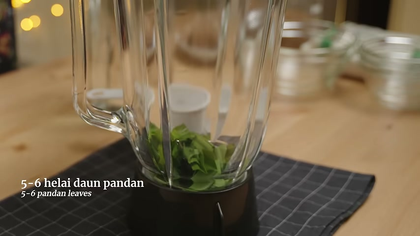
Bingkai 15
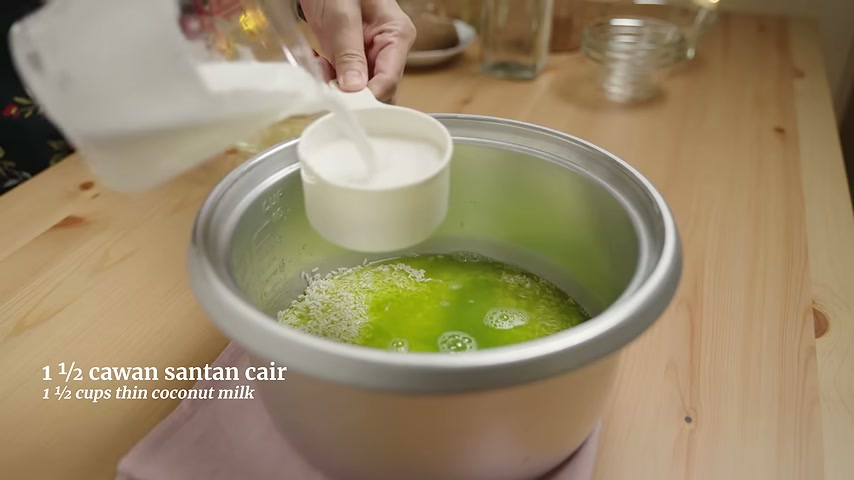
Bingkai 35
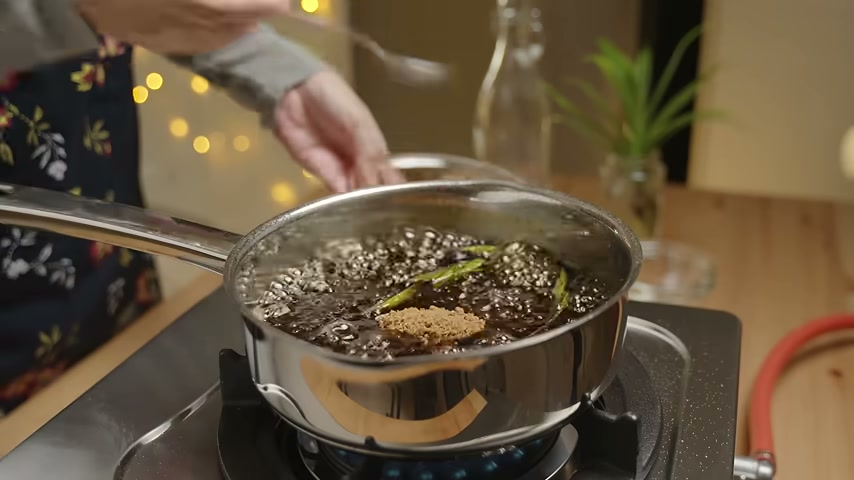
Bingkai 55
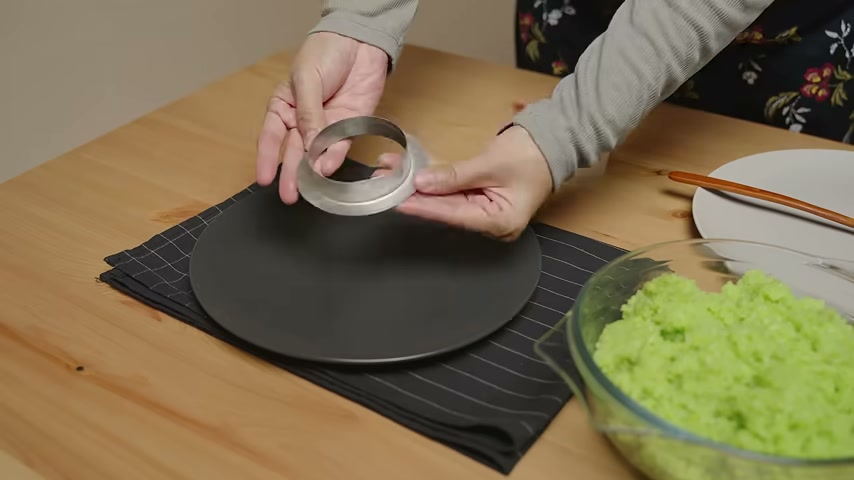
Bingkai 75
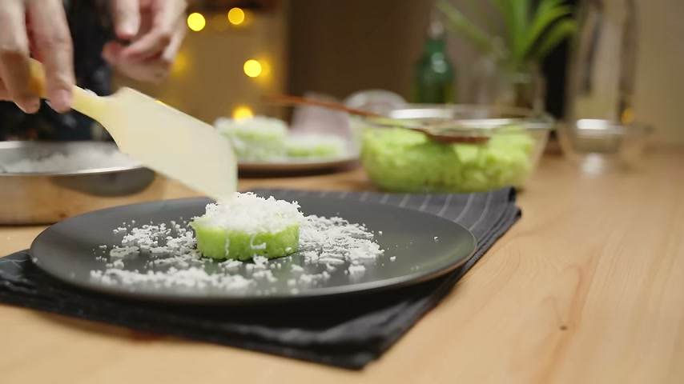
Bingkai 92
Fail: Kuih Lopes Guna Rice Cooker dan Tanpa Kukus.md | ditambah 2026-10-07 22:50
Karipap Rangup Inti Keledek
Sumber: https://www.youtube.com/watch?v=rqCVdf-NC88 Pembuat: Che Nom Tarikh disimpan: 2026-10-07 Jenis: Resipi Bahasa audio: Bahasa Melayu berdasarkan deskripsi dan sari kata; bahasa tidak dikenal pasti oleh transkripsi audio. Anggaran hasil: 35–40 biji.
Bahan
Kulit karipap
Tepung gandum — 500 g / 4 cawan.
Tepung beras — 2 sudu besar.
Minyak masak — 125 ml / ½ cawan.
Marjerin — 28 g / 2 sudu besar.
Air — 250 ml / 1 cawan. Deskripsi membetulkan sukatan 125 ml yang dipaparkan dalam video; gunakan 250 ml. [SEMAK] Percanggahan sukatan dalam video telah dibetulkan oleh pembuat dalam deskripsi.
Garam — 1 sudu kecil.
Inti keledek
Keledek oren — 1 kg.
Bawang merah besar — 2 biji.
Bawang putih — 4 ulas.
Cili kering — 6–7 tangkai.
Ikan bilis — 45 g / ½ mangkuk; ATAU udang kering — 3 sudu besar.
Minyak masak — ½ cawan.
Kayu manis — 1 batang.
Cengkih — 3 kuntum.
Bunga lawang — 2 kuntum. Nama disahkan melalui deskripsi bahasa Inggeris (“star anise”); deskripsi Melayu tersalah eja.
Daun kari — 2 tangkai.
Garam — secukup rasa.
Serbuk perasa — jika suka; kuantiti [TIDAK DINYATAKAN].
Gula — anggaran 2 sudu besar.
Air — secukupnya.
Rempah kari ayam atau daging — 2 sudu besar.
Daun sup — kuantiti [TIDAK DINYATAKAN].
Langkah
Langkah di bawah disusun daripada sari kata automatik yang banyak tersalah dengar. Kuantiti bahan diambil daripada deskripsi; butiran masa, berat doh dan arahan yang kurang jelas ditandakan [SEMAK]. Transkrip audio berasingan tidak tersedia kerana audio 722 saat melebihi had 600 saat.
Gaulkan tepung gandum, tepung beras dan garam.
Panaskan minyak masak bersama marjerin, kemudian tuangkan perlahan-lahan ke dalam campuran tepung. Gaul menggunakan garpu dahulu kerana minyak panas; apabila agak sejuk, sambung gaul menggunakan tangan hingga berderai.
Masukkan air sejuk dari peti sejuk sedikit demi sedikit sehingga doh boleh dibentuk. Gunakan sukatan air 250 ml dalam deskripsi, bukan 125 ml dalam paparan video. Doh tidak perlu diuli sehingga licin seperti doh roti.
Tutup doh atau masukkan ke dalam plastik dan rehatkan sekurang-kurangnya 1 jam [SEMAK: masa daripada sari kata automatik sahaja]. Sari kata turut menyebut rehat 3–4 jam [SEMAK].
Untuk inti, kupas keledek dan potong dadu kecil. Potong kasar bawang untuk dikisar; hiris daun sup.
Bancuh rempah kari dengan air; jumlah air bancuhan [TIDAK DINYATAKAN]. Kisar bawang merah, bawang putih, cili kering dan ikan bilis atau udang kering dengan sedikit air. Sari kata menyebut cili kering telah direbus [SEMAK].
Panaskan minyak. Tumis kayu manis, cengkih, bunga lawang dan daun kari sehingga naik bau. Masukkan bahan kisar dan bancuhan rempah kari, kemudian masak hingga pecah minyak.
Masukkan garam, gula dan serbuk perasa jika digunakan. Masukkan keledek dan gaul. Tuangkan air sehingga keledek agak tenggelam [SEMAK: paras air berdasarkan sari kata automatik].
Tutup dan masak dengan api perlahan sehingga keledek lembut dan inti kering. Sari kata menyebut lebih kurang setengah jam atau lebih [SEMAK]. Tutup api, masukkan hirisan daun sup dan sejukkan inti.
Bahagikan doh kepada bebola sekitar 25–27 g setiap satu [SEMAK: berat daripada sari kata automatik sahaja], kemudian canai nipis.
Letakkan inti dan lipat doh. Tekan bahagian tengah dahulu, rapatkan tepi dan kelim sehingga tertutup. Isi secukupnya tanpa menyukarkan doh dilipat.
Panaskan minyak untuk menggoreng; kuantiti minyak [TIDAK DINYATAKAN]. Jangan tunggu minyak terlalu panas. Goreng dengan api sederhana perlahan dan balikkan kerap sehingga perang sekata.
Angkat dan toskan minyak apabila karipap sudah masak dan rangup.
Petua
Tepung beras ditambah untuk membantu kulit kekal rangup walaupun sejuk, menurut pembuat.
Gunakan deskripsi sebagai rujukan sukatan air kulit: 250 ml / 1 cawan. Pembuat secara khusus meminta sukatan 125 ml dalam video diabaikan.
Kulit nipis, kelim tidak tebal dan inti yang penuh ialah ciri karipap yang disukai pembuat.
Jangan gaul minyak panas terus dengan tangan; gunakan garpu dahulu.
Sejukkan inti sebelum mengisi karipap.
Sari kata menyebut minyak yang terlalu panas boleh menyebabkan kulit bergelembung [SEMAK].
Arahan akhir tentang minyak menggoreng kurang jelas; sari kata seolah-olah menyebut supaya minyak tidak terlalu sedikit [SEMAK].
Sari kata menyebut daun sup mungkin mempercepatkan inti basi [SEMAK: kenyataan pembuat daripada sari kata yang kurang jelas, bukan panduan keselamatan makanan yang disahkan].
Tiada bahan, kuantiti atau langkah tambahan diandaikan daripada gambar.
Gambar
Gambar ditangkap mengikut selang masa video dan bukan dipilih mengikut kandungan. Nama bingkai dikekalkan seperti hasil skrip; nombor fail tidak dianggap sebagai cap masa dalam saat. Bingkai terakhir menunjukkan karipap sedang digoreng sehingga keemasan, bukan hidangan yang telah dihidangkan.
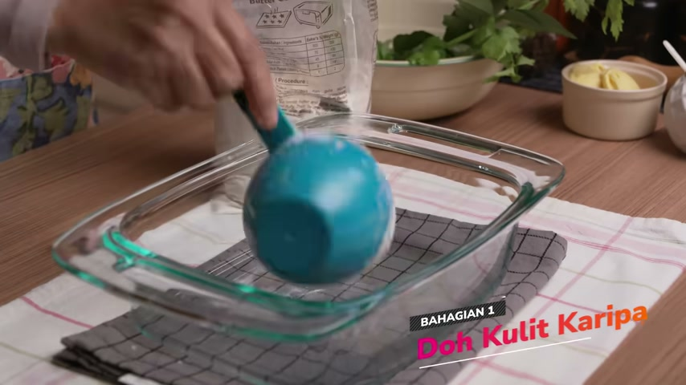
Bingkai 15
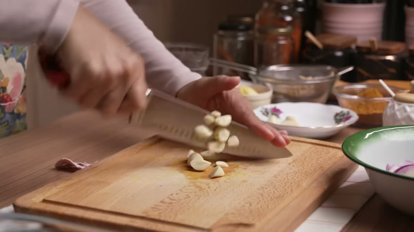
Bingkai 35
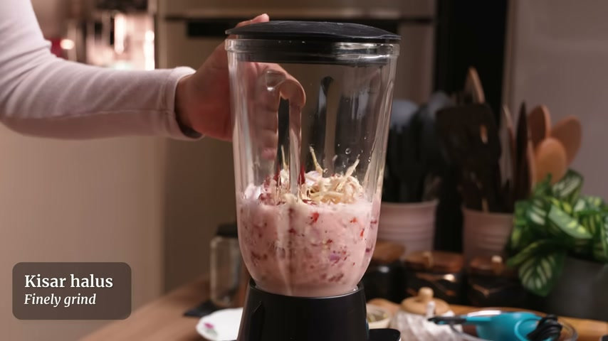
Bingkai 55
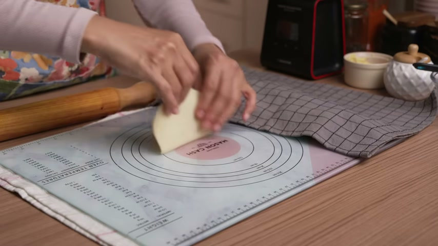
Bingkai 75
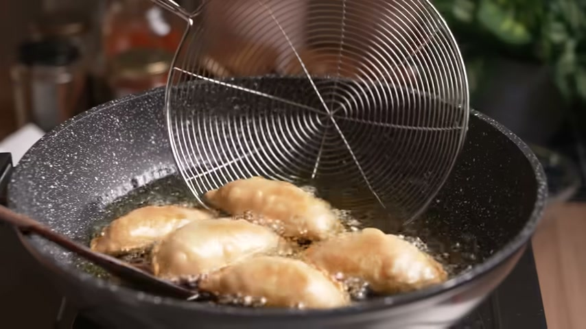
Bingkai 92
Fail: Karipap Rangup Inti Keledek.md | ditambah 2026-10-07 22:58 | dikemas kini 2026-10-07 23:19
Air tambahan: 1/2 cawan; masukkan sedikit demi sedikit mengikut keadaan doh.
Marjerin: 1 sudu besar.
Tepung tambahan untuk doh yang melekat dan ketika memotong: [TIDAK DINYATAKAN].
Minyak untuk menggoreng: [TIDAK DINYATAKAN]; audio menyebut gunakan minyak yang agak banyak.
Sambal sardin
Sardin: 1 tin besar.
Bawang putih: 3 ulas; hiris nipis.
Bawang merah kecil: 1–2 biji; hiris nipis.
Cili kisar: 2–3 sudu besar.
Tomato: 2 biji; belah empat.
Sos tiram: 1 sudu besar.
Kentang: 1 biji; potong dadu kecil.
Bawang besar: 1 biji; potong kasar untuk dimasukkan pada akhir masakan.
Jus atau air asam jawa: 1–2 sudu besar.
Garam: secukup rasa.
Cili merah dan cili padi: [TIDAK DINYATAKAN]; pilihan mengikut selera.
Minyak untuk menumis: [TIDAK DINYATAKAN].
Air untuk membancuh asam jawa atau menambah kuah: [TIDAK DINYATAKAN].
Langkah
Cucur kembung
Campurkan air suam, yis kering dan gula dalam bekas. Kacau hingga sekata dan ketepikan beberapa minit sehingga yis mengembang. Tempoh tepat: [TIDAK DINYATAKAN].
Campurkan tepung gandum dengan garam. Tuangkan campuran yis yang sudah mengembang dan gaul hingga sebati. Boleh menggunakan pengikis plastik sebelum menguli dengan tangan.
Uli doh. Jika terlalu keras, tambah air sedikit demi sedikit; tidak semestinya perlu menggunakan semua air tambahan. Jika doh terlalu lembik dan melekat, tabur sedikit tepung secara beransur-ansur.
Masukkan marjerin dan uli sehingga doh agak elastik, licin dan kurang melekat pada tangan.
Bulatkan doh dan rehatkan sehingga mengembang, kira-kira 40 minit hingga 1 jam [SEMAK — tempoh daripada audio/sari kata, bukan kapsyen]. Tempohnya boleh lebih lama mengikut cuaca dan suhu tempat perapan.
Selepas doh mengembang, tumbuk perlahan untuk mengeluarkan angin, kemudian tekan atau uli sedikit.
Ratakan menggunakan tangan atau penggelek hingga ketebalan kira-kira 1.5 cm [SEMAK — ukuran daripada audio/sari kata, bukan kapsyen]. Tabur sedikit tepung supaya tidak melekat ketika dipotong.
Potong mengikut bentuk yang disukai; saiz tidak perlu sama. Audio menyebut doh dipotong menjadi 18 bahagian [SEMAK — bilangan daripada audio sahaja; bukan hasil wajib].
Biarkan doh yang sudah dipotong kira-kira 5 minit [SEMAK — tempoh daripada audio/sari kata, bukan kapsyen].
Goreng dalam minyak panas yang agak banyak menggunakan api sederhana sehingga masak sekata. Tempoh menggoreng: [TIDAK DINYATAKAN]. Api terlalu kuat boleh menyebabkan luar cepat perang tetapi bahagian dalam belum masak.
Angkat, toskan minyak dan hidangkan panas bersama sambal sardin.
Sambal sardin
Sediakan bawang putih dan bawang merah yang dihiris nipis, tomato yang dibelah empat, kentang yang dipotong dadu kecil serta bawang besar yang dipotong kasar. Jika menggunakan pes asam jawa berbiji, bancuh dengan sedikit air.
Panaskan minyak dan tumis bawang putih serta bawang merah yang dihiris.
Masukkan cili kisar. Masak sehingga cili kering dan pecah minyak.
Masukkan tomato dan masak sehingga lembut serta hancur dalam sambal untuk memekatkan kuah.
Tuangkan kuah sardin dahulu; simpan isi ikan untuk dimasukkan kemudian.
Masukkan kentang dan air asam jawa. Teruskan memasak sehingga kentang lembut.
Masukkan sos tiram dan isi ikan sardin. Apabila mendidih, rasa dan tambah garam jika perlu.
Masukkan bawang besar. Jika mahu lebih berkuah, tambah air mengikut selera. Masukkan cili merah dan cili padi jika suka.
Hidangkan sebagai pencicah cucur kembung.
Petua
Yis yang mengembang selepas dicampur air suam dan gula menunjukkan yis masih aktif. Menurut audio, pemeriksaan awal ini boleh dilangkau jika yakin yis masih baik.
Tepung roti boleh digunakan sebagai pilihan menurut audio; kuantiti penggantian khusus: [TIDAK DINYATAKAN]. Senarai bahan kapsyen menggunakan tepung gandum.
Tambah air dan tepung sedikit demi sedikit supaya doh tidak terlebih lembik atau terlalu keras.
Jika doh berlekuk akibat dipegang, goreng dengan bahagian berlekuk menghadap ke atas supaya mengembang dan menjadi lebih licin.
Cucur lebih rangup di luar apabila dimakan panas, manakala bahagian dalamnya gebu.
Cili merah dan cili padi ialah pilihan untuk menambah rasa pedas.
Audio menyebut 2 tin kecil boleh menggantikan 1 tin besar [SEMAK — bilangan daripada audio sahaja]. Jika menggunakan 1 tin kecil, audio menyarankan separuh resipi [SEMAK]. Saiz atau berat tin: [TIDAK DINYATAKAN].
Catatan sumber dan semakan
Bahan serta kuantiti utama diambil daripada deskripsi Bahasa Melayu dan disemak dengan senarai Bahasa Inggeris yang sepadan. Langkah dan petua diambil daripada sari kata automatik serta transkrip audio.
Sari kata dilabel automatik id-orig, tetapi pertuturan/transkrip yang dilaporkan adalah Bahasa Melayu. Kedua-duanya mengandungi kesalahan pengecaman; perkataan yang jelas disokong konteks dan kapsyen dinyatakan dalam Bahasa Malaysia.
Audio bagi pilihan pengganti marjerin tidak jelas; pilihan itu tidak dimasukkan untuk mengelakkan mereka bahan.
Audio berdurasi 539 saat dan transkrip berakhir pada 532 saat; tempoh video tidak dilaporkan. Kelengkapan pertuturan selepas penghujung transkrip tidak dapat dipastikan.
Kuantiti dan tempoh yang tidak terdapat dalam kapsyen ditandakan [SEMAK].
Gambar
[TIDAK DINYATAKAN] — skrip pengumpulan tidak menghasilkan gambar (0 fail), maka tiada gambar dipautkan.
Gambar dalam aliran pengumpulan ini ditangkap mengikut selang masa video, bukan dipilih mengikut kandungan.
Kentang Rangup Bersalut Parmesan dan Roti Bakar Herba
Sumber: https://youtu.be/QRTF3y1ywX4?si=j0d7w5prUU6VITeV Pembuat: Erstaunliche Rezepte Tarikh disimpan: 2026-10-08 Jenis: Resipi Bahasa audio: [TIDAK DINYATAKAN] — tiada pertuturan dikesan. Skrip melabelkan bahasa sebagai en, tetapi tiada transkrip untuk mengesahkannya.
Bahan
Kentang dan adunan
Kentang besar — 2 biji (500 gram).
Air sejuk untuk merebus — [TIDAK DINYATAKAN].
Garam — 2 cubit.
Serbuk paprika — 1 sudu teh [SEMAK]. Deskripsi bahasa Jerman menyebut paprika, tetapi sari kata bahasa Albania menyebut lada hitam pada bahagian ini. Deskripsi diutamakan.
Lada hitam — [TIDAK DINYATAKAN].
Daun parsli (Petersilie) — 1 ikat, dicincang halus.
Tepung jagung — 2 sudu besar.
Salutan dan menggoreng
Telur — 1 biji.
Garam — 1 cubit.
Serbuk roti — [TIDAK DINYATAKAN].
Keju Parmesan — 1 sudu besar.
Daun selasih (Basilikum) — [TIDAK DINYATAKAN].
Minyak sayuran — [TIDAK DINYATAKAN].
Roti bakar herba
Roti pilihan — [TIDAK DINYATAKAN].
Garam — [TIDAK DINYATAKAN].
Campuran herba Itali — [TIDAK DINYATAKAN].
Serbuk lada berasap (geräucherter Pfeffer) — [TIDAK DINYATAKAN] [SEMAK: jenis lada tidak diperincikan oleh sumber].
Serbuk bawang putih — [TIDAK DINYATAKAN].
Minyak zaitun — [TIDAK DINYATAKAN].
Keju Parmesan — [TIDAK DINYATAKAN].
Langkah
Kentang rangup
Potong 2 biji kentang besar (500 gram). Tuangkan air sejuk ke atas kentang dan rebus sehingga lembut.
Sumber seterusnya menyenaraikan 2 cubit garam, 1 sudu teh paprika [SEMAK], lada hitam, 1 ikat parsli yang dicincang halus dan 2 sudu besar tepung jagung sebagai bahan adunan. Cara melumatkan kentang dan mencampurkan bahan menjadi adunan: [TIDAK DINYATAKAN] dalam teks sumber.
Bahagikan adunan kepada 5 bahagian. Tekan sedikit dengan garpu. Bentuk tepat: [TIDAK DINYATAKAN].
Sediakan 1 biji telur bersama 1 cubit garam untuk salutan. Cara mengadun telur: [TIDAK DINYATAKAN].
Sediakan campuran serbuk roti, daun selasih dan 1 sudu besar keju Parmesan.
Celupkan kentang ke dalam telur, kemudian salut dengan campuran serbuk roti, selasih dan Parmesan.
Masukkan ke dalam minyak sayuran yang panas dan goreng sehingga perang keemasan. Suhu minyak dan tempoh menggoreng: [TIDAK DINYATAKAN].
Gunakan tisu dapur untuk menyerap minyak berlebihan.
Roti bakar herba
Sediakan roti pilihan bersama garam, herba Itali, serbuk lada berasap [SEMAK], serbuk bawang putih, minyak zaitun dan Parmesan. Cara memotong roti serta cara menyapu atau mencampurkan bahan: [TIDAK DINYATAKAN] dalam teks sumber.
Bakar di dalam ketuhar pada 200°C (400°F, seperti dinyatakan oleh sumber) selama 10 minit.
Petua
Pembuat menyarankan penggunaan daun selasih untuk memberi rasa pada salutan kentang.
Serap minyak berlebihan dengan tisu dapur selepas menggoreng.
Deskripsi menyifatkan hasil kentang sebagai rangup di luar dan lembut di dalam.
Resipi ini diterjemahkan daripada deskripsi bahasa Jerman dan sari kata bahasa Albania. Perbezaan terjemahan paprika/lada hitam ditandakan pada bahan; tiada transkrip audio tersedia.
Jumlah hidangan: [TIDAK DINYATAKAN]. Pembahagian adunan kepada 5 bahagian bukan pengesahan jumlah hidangan.
Gambar
Gambar ditangkap mengikut selang masa video, bukan dipilih mengikut kandungan. Nombor fail dikekalkan dan tidak dianggap sebagai cap masa dalam saat.
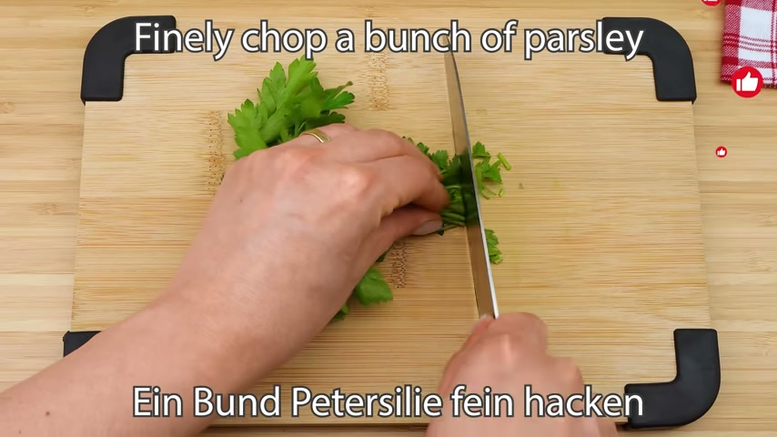
Bingkai 15Bingkai 35
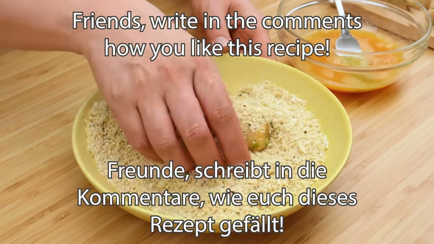
Bingkai 55
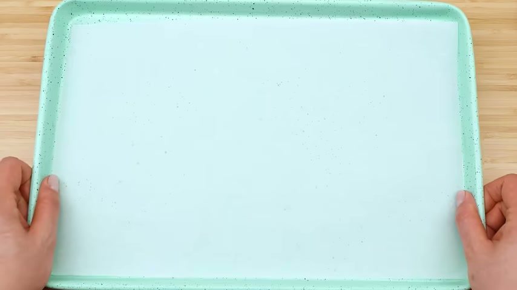
Bingkai 75Bingkai 92
Fail: Kentang Rangup Bersalut Parmesan dan Roti Bakar Herba.md | ditambah 2026-10-08 06:14
Pho Vietnam
Sumber: https://youtu.be/9Sg21AHuO4A?si=7u2bOTERtsYB0T1E Pembuat: RecipeTin Eats Tarikh disimpan: 2026-10-08 Jenis: Resipi Bahasa audio: [TIDAK DINYATAKAN] — tiada pertuturan dikesan. Label bahasa en daripada skrip tidak dapat disahkan kerana tiada transkrip audio.
Bahan
[TIDAK DINYATAKAN] — deskripsi video tidak menyenaraikan bahan atau kuantiti. Tiada sari kata atau transkrip audio diperoleh.
Langkah
[TIDAK DINYATAKAN] — deskripsi video tidak memberikan langkah penyediaan, dan tiada sari kata atau transkrip audio diperoleh. Langkah tidak diandaikan daripada gambar.
Petua
[TIDAK DINYATAKAN] — tiada petua memasak dalam teks sumber yang diperoleh.
Terjemahan deskripsi: “Tonton cara menyediakan Pho, hidangan paling ikonik Vietnam!”